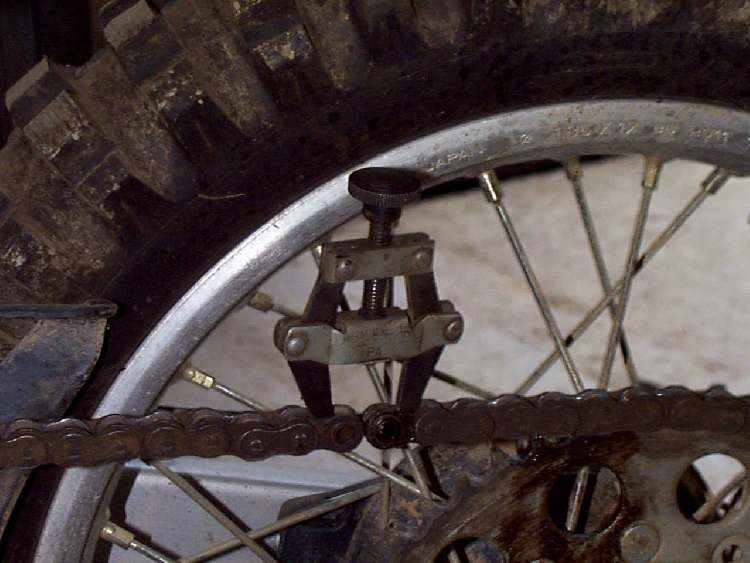

The chain, front sprocket and rear sprocket wear together and are replaced as a set. A new chain on worn sprockets, or the other way round, wears out quickly. This page is an assessment and hand-off: it tells you how to identify the right parts and what a good workshop does. Joining a chain correctly needs the right tool and the chain maker's instructions, so it is treated as workshop work.
Safety
- Do not ride on a chain with cracked plates, missing rollers or broken sprocket teeth. A snapped chain can lock the rear wheel or break the engine case.
- Cutting an old chain with a grinder throws sparks. Keep well away from the fuel tank and wear eye protection.
- The rear axle nut must be tightened to the correct torque after the wheel is refitted.
Identify the parts (rider or home)
- Read the size stamped on the chain side plates, for example 428 or 520. K-Light 125: 428HO-1, 134 links.
- Count the links, or read the number on the old packet. K-Light 125: 134 links.
- Read the tooth count stamped on each sprocket. K-Light 125 rear sprocket: 41 teeth. Fit the same counts as before; changing them changes the gearing and the speedometer reading.
- Note the joining method on the old chain (clip link or riveted link) and whether it is a sealed (O-ring) chain.
What the workshop will do
- Remove the front sprocket cover and the front sprocket (bolt and plate or circlip). K-Light 125 front (drive) sprocket bolt: 10 to 16 N·m.
- Remove the rear wheel. On a chain with no joining link, the swingarm must come out to fit it; the K-Light manual removes the swingarm.
- Remove the rear sprocket nuts in a criss-cross order, then the circlip, washer and sprocket from the hub carrier.
- While apart, check the cush drive rubbers (Check the cush drive rubbers), the chain slider and the wheel bearings.
- Fit the new sprockets. K-Light 125 rear sprocket nuts: 45 to 50 N·m, tightened in two or three passes in a criss-cross order.
- Fit the new chain. Join it with the link supplied, following the chain maker's instructions for clip direction or rivet flaring and its measurements.
- Set slack and alignment (Check and adjust chain slack), tighten the axle nut to the confirmed torque and lubricate.
What to ask for
- Chain and both sprockets replaced together, with the same sizes and tooth counts.
- Old parts back, so you can see the wear.
- The joining link fitted with the proper tool, and the axle torque value used.
Do not attempt at home
- Do not rivet a joining link with a hammer and punch. A badly flared rivet lets the link come apart.
- Do not over-tighten a new chain to "allow for stretch". Set it to the specified slack.
If it did not fix the problem
- New chain runs on one side of the sprocket or rubs: Chain rubs on the guard, slider or swingarm.
- Clunk when opening and closing the throttle remains: Clunk or snatch from the rear wheel.
Reference values (K-Light 125)
| Item | Value | Source |
|---|---|---|
| Chain | 428HO-1, 134 links | K-Light 125 manual, PDF p. 158 |
| Rear sprocket | 41 teeth | K-Light 125 manual, PDF p. 158 |
| Rear sprocket nuts | 45 to 50 N·m, two or three passes, criss-cross | K-Light 125 manual, PDF p. 177 |
| Front sprocket bolt | 10 to 16 N·m | K-Light 125 manual, PDF p. 194 |